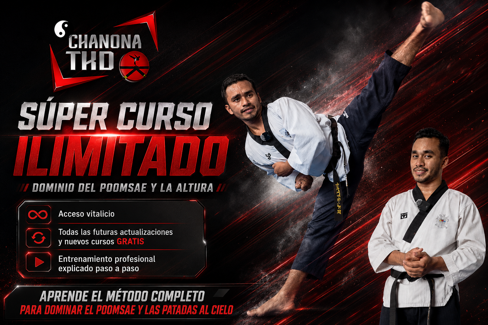

Material organizado por formas, líneas y movimientos.
APRENDE EL MÉTODO
El conocimiento, organizado para volver a él cuando quieras.
¿Quieres detenerte en cada detalle técnico, repetir una explicación y aplicar el Método ChanonaTKD a tu propio ritmo? Academia Digital reúne ese estudio en un solo lugar.

Academia Digital ChanonaTKDDominio del Poomsae y la Altura · Antes Super Curso Ilimitado
ESTUDIA A TU RITMO
Dejar de buscar explicaciones dispersas.
La Academia está pensada para que puedas consultar un movimiento, detenerte, comprenderlo y volver a practicarlo.
Conceptos y ejercicios para comprender la ejecución técnica.
Explicaciones sobre cómo se relacionan las capacidades físicas y el movimiento.
Estudia, pausa y revisa las explicaciones cuando lo necesites.
EXPERIENCIA DE ENSEÑANZA
Prueba cómo explicamos.
Tres clases cortas: primero flexibilidad, después pateo y finalmente Poomsae. Puedes explorar cualquiera y consultar el programa sin esperar al final.
Clase 1 de 3FlexibilidadVIDEO PROVISIONAL
APRENDIZAJE INDEPENDIENTE
Un pago. Acceso vitalicio al método.
Incluye los contenidos de Academia Digital ChanonaTKD: Dominio del Poomsae y la Altura, así como futuras actualizaciones del programa.
Útil para practicantes, atletas y profesores que quieren estudiar y aplicar los conocimientos por su cuenta. No incluye planificación individual ni sesiones privadas.
En System, el acceso a Academia se mantiene solo durante la membresía activa. Al comprar Academia individualmente, tu acceso es vitalicio.
Mi experiencia compitiendo y enseñando me llevó a explicar los movimientos por partes, para que otros puedan entender y repasar incluso los detalles más pequeños.
Pago único$2,800 MXN$184.72 USD · €163.04 EURPagos internacionales mediante PayPal: cargo adicional de $6 USD o €6 EUR, según la moneda.
Acceso vitalicio y actualizaciones incluidas.
Quiero acceder a la Academia¿Prefieres dividir el pago en dos partes?
Preguntar por pago en dos partesPreguntas frecuentes
¿Hay mensualidades?
No. El acceso individual de Academia Digital es mediante un pago único de $2,800 MXN.
¿Incluye nuevos contenidos?
Sí, las actualizaciones futuras de Academia se incluyen en el acceso vitalicio.
¿Puedo pagar en dos partes?
Existe la opción de consultar un pago dividido. Escríbeme para confirmar cómo funciona antes de iniciar.
¿Academia incluye clases privadas?
No. Aquí estudias y aplicas el material a tu ritmo. Si necesitas correcciones directas o una ruta semanal, puedes revisar Personal o System.
Aprende el método a tu ritmo.
Cuéntame desde qué país nos escribes y te comparto la información para acceder.
Quiero acceder a la AcademiaOTRAS FORMAS DE COMENZAR